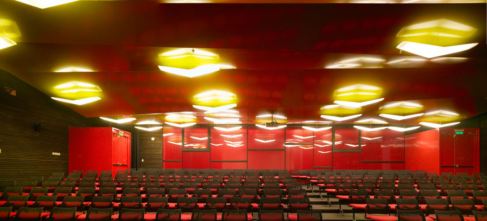

Born in Fire: Eruptive Stars and Planet Formation
An international workshopSeptember 24-27, 2024Santiago, Chile
Last updated: July 12, 2024
September 24-27, 2024. Auditorium Biblioteca Nicanor Parra, U. Diego Portales, Santiago, Chile.
Is there a link between the irregular accretion patterns seen in some young stars and the formation of planets? Do the mechanisms driving episodic accretion in eruptive stars hold clues to giant planet formation? What do observations of eruptive stars tell us about gravitational instabilities near young stars? This workshop is dedicated to exploring these emerging paradigms, aiming to connect planet formation with the dynamic world of episodically accreting stars. The workshop will facilitate collaboration among experts in eruptive stars, planet formation, and computational modeling. Through interdisciplinary discussions, we aim to nurture innovative solutions to age-old questions in the fields of star and planet formation.
Confirmed so far:
Please fill in this form to register for the conference:
Thanks to the NAASC Support for Conferences and Workshop program, as well as the YEMS Millennium Nucleus, we have secured funding that allow us to support the participation of early career researchers (ERC) and students in need of financial aid to attend. We will do our best to support as many people as we can.
We are currently in the process of determining the format and extent of our conference. While our current plan is to organize an in-person meeting, we are actively exploring the potential for a hybrid event. This involves assessing the availability of resources for hybrid setups at potential venues. We will keep you informed by posting updates here as we make decisions.
All participants must follow the NRAO Code of Conduct. The members of the Local Organizing Committee are designated as the contact points for all matters related to this code.
The conference starts on Tuesday, the 24th, at 9:00 AM and finishes on Friday, the 27th, at 1:00 PM. The tentative program will be announced after July 15.
To contact the LOC or the SOC write to: fireborn2024@gmail.com
There are many accommodation options in Santiago, below are suggestions of reputable hotels with indicative room rates for September 2024 when booking direct with the hotel. Additional savings can be made in some cases with sites such as Booking.com. See further below for cheaper options. Each of them is situated in popular neighborhoods in the city with many cafes, restaurants, and bars nearby, as well as all being close to metro stations that will provide easy access to the conference venue.
Expected Single/Double Room Rate: 145.900 CLP/night
Closest metro station: Tobalaba
Journey time to conference venue: 26 mins
Google Maps Link
Expected Single/Double Room Rate: 96.000 CLP/night
Closest metro station: Tobalaba
Journey time to conference venue: 28 mins
Google Maps Link
Expected Single/Double Room Rate: 70.500 CLP/night
Closest metro station: Los Leones
Journey time to conference venue: 25 mins
Google Maps Link
Expected Single/Double Room Rate: 131.100 CLP/night
Closest metro station: Manuel Montt/Pedro de Valdivia
Journey time to conference venue: 31 mins
Google Maps Link
Expected Single/Double Room Rate: 85000/98000 CLP/night
Closest metro station: Universidad Catolica
Journey time to conference venue: 21 mins
Google Maps Link
In addition to the list above, more economic options can be found via Airbnb. We suggest searching in the neighborhoods of Providencia (e.g. Barrio Italia), or Santiago Centro (Barrio Lastarria), or Las Condes with close metro links. You can check the address of the University below in "The Venue" section. If you have any doubts or would like any further information about Santiago and local areas then please feel free to contact the LOC.
Visas: Citizens from most countries do not require a visa to enter Chile as a tourist, but please check with your local embassy before traveling as it may take up to 20 days for processing if you need a visa.
Visa Invitation Letters: If you require a Letter of Invitation as proof that your abstract submission and/or registration is accepted by the conference organizer please email us at fireborn2024@gmail.com.
Travel: You will arrive at the Santiago airport (SCL). Transportation from the airport to the hotel can be arranged and paid directly at the airport as you exit customs. Uber is an option but not all Uber drivers will pick you up at the arrivals level.
Travel to and from the venue: Attendees are advised to remain vigilant and prioritize their safety while traveling. The Santiago metro is a convenient option for getting around the city, with services running frequently. The closest metro stations to the conference venue are Toesca (5 min walk, Line 2) and Los Heroes (8 min walk, Lines 1 & 2). To use the metro, you will need a Bip! card, which can be purchased and recharged from the counters at most metro stations. Your Bip! card can be used on any metro or local bus service in the city. Additionally, Uber and Cabify services are widely available and relatively inexpensive.
COVID-19: All COVID-19 restrictions in Chile have been lifted. You are not required to show proof of vaccination to fly to Chile. For Your health and safety. September is the beginning of spring, and the end of the flu and COVID season in the southern hemisphere. We will NOT be requiring masks during the conference, but you are welcome to wear one. We will have masks available through the conference if you need one.
If you feel sick or are experiencing COVID-19 symptoms during the conference please stay in your hotel until we can get you a COVID-19 test.
For any other health concern please email us at fireborn2024@gmail.com.
Auditorio Biblioteca Nicanor Parra, Universidad Diego Portales. Address: Vergara 324, Santiago, Región Metropolitana, Chile.
Photograph by Roland Halbe.
The Eruptive Stars and Planet Formation Connection Workshop is organized with the financial support of the North American ALMA Science Center (NAASC) and the Millennium Nucleus on Young Exoplanets and their Moons (YEMS) an ANID - Millennium Science Initiative Program Center Code NCN2021_080.
Artwork by DALL-E 3.5, prompt: An expressive oil painting of planet forming gravitational instability clumps around a protoplanetary disk. Website development based on html5up source code.